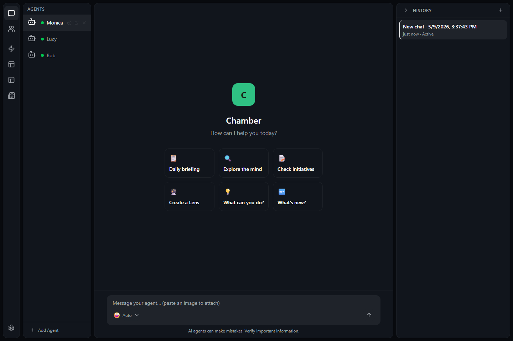

Run the installer
Open the downloaded installer and follow the prompts on screen.
 CHAMBER
GitHub
CHAMBER
GitHub
Getting Started
Chamber is a desktop workspace for AI helpers called minds. This guide walks you through opening the app, signing in, choosing a mind, and finding your way around.
Use the installer provided for your computer. When the installer finishes, Chamber appears with your other desktop apps.
Open the downloaded installer and follow the prompts on screen.
Your computer may ask you to confirm that you want to open Chamber. Only continue if you downloaded it from a source you trust.
Updates may include fixes and safer behavior. Install them when Chamber offers them.
Open Chamber the same way you open any desktop app. If it was already running, it may return from the tray or taskbar instead of starting a new copy.

Chamber needs an account so minds can use supported AI services. Follow the sign-in screen and return to Chamber when the browser or account window is finished.
A mind is your AI helper. You can make a new one for a job, or open an existing one to continue where you left off.
Select an existing mind, or choose the option to add a new mind.
Use a plain name such as Research Assistant, Project Planner, or Weekly Review.
Try a short message first, such as asking the mind to summarize your goal or plan the next step.
Chamber is organized so you can choose a mind, talk with it, and review what it is doing without leaving the main screen.
Treat a mind like a capable assistant. Review important answers, approve only actions you understand, and avoid sharing secrets or sensitive personal information unless your organization has approved that use.